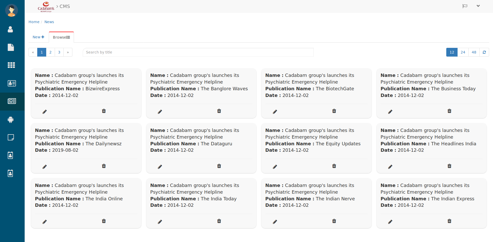
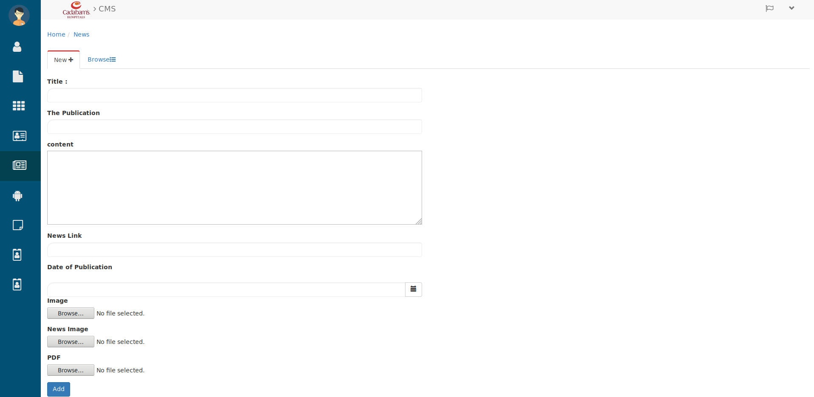
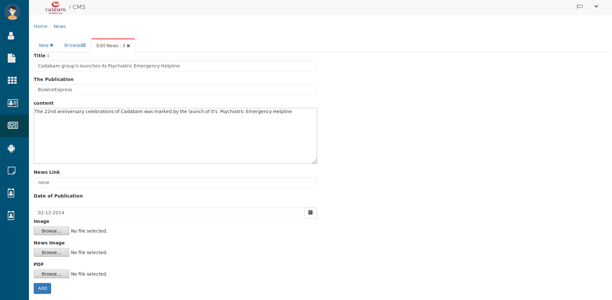

NEWS¶
Browsing News¶

Browsing News
Here you can browse all News
- Search the News in search bar by entering their Title.
- Use the page and refresh button to Browse News.
- To create a new news click on New+ then you will see below tab.
Creating News¶

Creating News
Here
- Give the Title of news in specified field. then
- Enter The Publication then write the Content inside it’s text-area.
- Below that enter the News Link then
- Pick the Date of Publication by date picker. then
- Upload the Image, News Image and News PDF by using their Browse button.
- Then hit the Add button and it will be added in news list, which you can check in NEWS tab.
- To edit the news click on that news’s Edit(pencil) icon. then you will see below tab.
Editing News¶

Editing News
Here you can change all the filled details (while Creating News)
- Then hit the Add button and it will be added in news list, which you can check in NEWS tab.
Let’s see how it looks from user perespective or then scroll down till “news & publications”